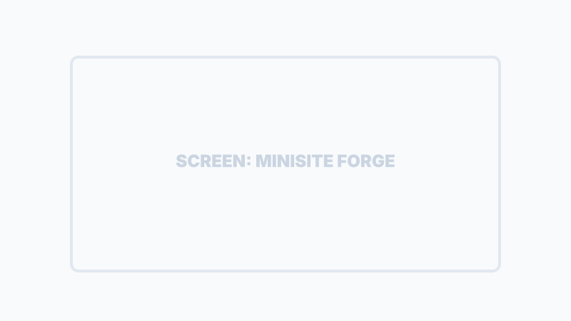
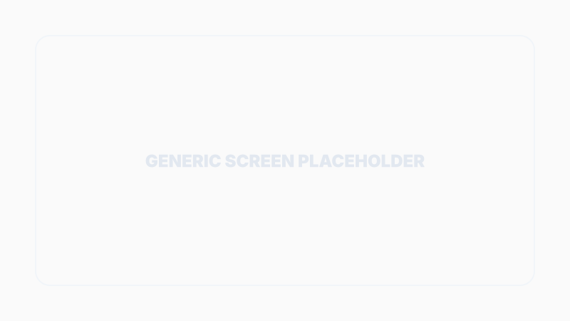
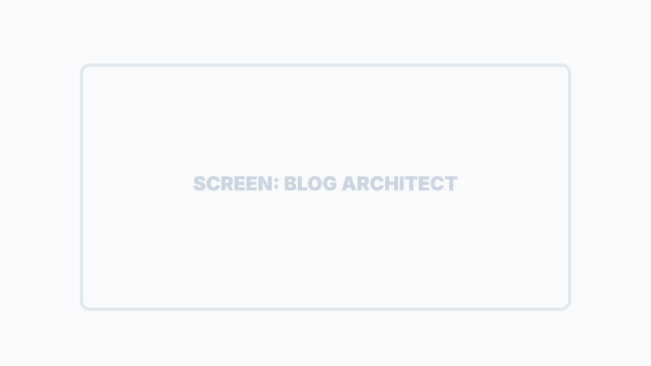

Presenza Online: Sito e Blog
SiTeBoS trasforma automaticamente le tue informazioni operative in strumenti di marketing persuasivi, eliminando la necessità di webmaster esterni o agenzie di content marketing.
Minisite Forge
Il Minisite è la vetrina digitale della tua azienda, ottimizzata nativamente per la navigazione da smartphone e integrata con il tuo catalogo.
Generazione Auto
Creato partendo dal tuo catalogo e descrizione aziendale.
Stili Variabili
Scegli tra design Classic, Bento o Dark Tech.
GitHub Pages Native
Pubblicazione istantanea con un solo click.

Marketing & Broadcast Hub
Il Marketing Hub è il centro operativo per gestire la proiezione esterna della tua azienda, dai post social alla distribuzione del minisito.

Blog Content Architect
L'IA di SiTeBoS non scrive semplici articoli "riempitivi", ma contenuti tecnici e strategici basati sul tuo vero saper fare (Know-How).
Analisi Knowledge Base
"L'IA attinge direttamente dalla tua Knowledge Base (HoneyPot) per estrarre dati reali, procedure e casi studio specifici della tua azienda."
Struttura SEO Native
Storytelling Multimodale

Nota: Ogni articolo include automaticamente titoli, meta-descrizioni e keyword ottimizzate per i motori di ricerca, garantendo visibilità organica al tuo business.